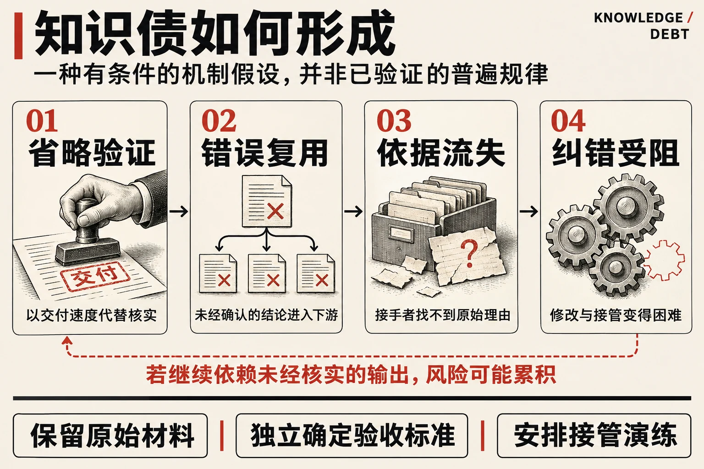
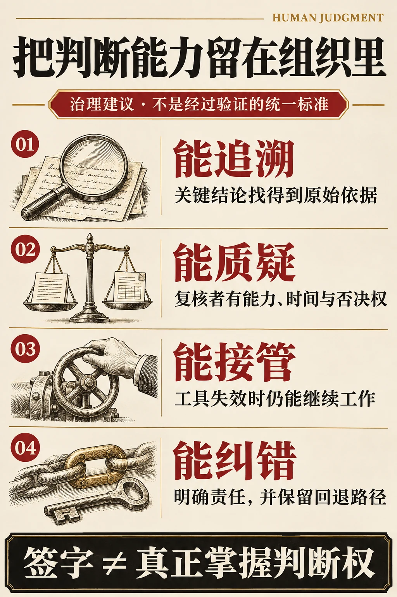

这份报告的三个判断
事实、框架与治理建议分别处理，不用一个概念解释所有 AI 风险。
- 事实 / EVIDENCE
表现与能力要分开看
辅助状态下完成得更好，不自动代表撤去工具后仍能独立判断。研究结果依赖任务与工具设计。
- 框架 / FRAMEWORK
债务需要具体后果
知识缺口只有进入后续依赖、抬高未来纠错成本时，债务类比才有实际用途。
- 行动 / PRACTICE
保留有效的接管能力
把原始证据、独立验收、关键技能练习和回退方法纳入流程，而不只增加签字。
导读：先区分证据，再作判断
当 AI 的产出速度超过组织理解、验证和纠错的速度，效率提升可能伴随一笔尚未入账的成本。本报告以“知识债”讨论这笔成本：它如何形成，什么证据支持这一担忧，哪些推论仍需检验，以及企业怎样保留真正有效的判断能力。
现有证据支持一个有条件的结论：某些 AI 使用方式会妨碍学习，也可能让复核流于形式；另一些使用方式能够传播经验、帮助新人提高能力。企业需要管理的是具体工作流程中的依赖和验证能力，而不能仅凭 AI 使用量判断风险。
一 原始命题与需要修正的概念
这次讨论的起点是一个鲜明判断：AI 时代，辨别和判断能力成为必备能力；当机器能够完成任务，而人无法理解和评价结果时，人可能只保留名义上的决定权。持续不处理的“知识债”，可能积累成严重的组织风险。
这一判断抓住了执行能力与判断能力之间的落差。不过，“过去人脑想到了，技术做不到”描述的是技术能力约束，不是软件工程中技术债的原始含义。
Ward Cunningham 在 1992 年提出债务类比时，讨论的是先交付尚未成熟的代码，再通过重写和整理偿还欠账。短期收益可以合理，但未偿还的欠账会增加后续开发成本。他已经把对系统的理解与持续演进联系起来。因此，知识债更适合被理解为技术债等既有问题在 AI 工作流中的延伸，而不是完全取代它们的新阶段。[1]
本报告采用一个工作定义：个人或组织持续依赖外部生成的结果，却未同步建立与风险相称的理解、验证和纠错能力，由此积累未来的返工成本、判断风险与能力缺口，称为知识债。 这是一种分析框架，不是已有统一量表的成熟学术概念，也不主张这一用语由本次讨论首次提出。
不是每一种“不懂”都构成债务。使用数据库的人不必理解每个存储算法。只有当当前的知识缺口被带入后续依赖，且可能提高未来解释、修改或纠错的成本时，债务类比才有实际用途。
二 哪些现象已有证据
任务完成得更好 未必意味着学得更多
2025 年 PNAS 的高中数学现场实验比较了普通 GPT 界面、带教学护栏的 GPT 辅导工具和对照组。普通界面组练习表现提高，但撤去 AI 后，考试成绩相对对照组低约 17%，对应评分尺度约 5.4 个百分点的差距。教学护栏组没有出现同样显著的负面影响，但其无辅助考试成绩也未显著高于对照组。[2]
这项研究说明，辅助状态下的表现和独立能力必须分别测量。它研究的是特定高中数学课堂，不能据此声称企业员工的判断力普遍下降，更不能把成绩变化称为智力下降。
对 AI 的信任与思考投入存在关联
一项发表于 CHI 2025 的调查收集了 319 名知识工作者的 936 个使用实例。更高的 AI 信任与较少的自报批判性思考相关，较高的任务自信则与更多批判性思考相关。研究还发现，思考活动会转向核实信息、整合结果和管理任务。[3]
它提供了值得警惕的行为线索，但不是长期认知能力的客观测量。相关关系不能直接证明因果，自报投入减少也可能部分来自任务变简单，不能全部解释为能力退化。
AI 也可能帮助人学习
QJE 正式发表的客服研究使用了 5,172 名员工的数据。AI 辅助使每小时解决的问题数量平均提高约 15%，经验较少和技能较低者受益更大。作者还观察到支持学习效应的迹象，包括部分效率改善在工具中断时仍然存在；不过，中断分析有噪声，可能受问题类型差异影响。[4]
这项证据限制了“使用 AI 必然削弱能力”的说法。但研究也发现，经验最丰富、技能最高的员工速度略有提升，质量却略有下降。单一企业的结果不能证明所有岗位都会受益，也不能解决长期影响问题：客服工作、相对明确的结果反馈和专家经验的可复用性，都可能影响结果。
以上研究的对象、方法和指标不同，不能把这些百分比放在同一坐标上相加或抵消。它们共同要求企业同时检查当期产出、独立能力和错误成本。
软件工程领域正在细分这种欠账
原讨论提到的两项 2026 年材料可以核实，但证据类型需要明确。Margaret-Anne Storey 于 2026 年 6 月在 ACM Queue 发表文章，区分技术债、认知债和意图债：分别关注代码是否易于改变、团队是否具有共享理解，以及目标、约束和设计理由是否被明确记录。它是一种概念框架，不能作为企业能力退化已经得到因果验证的证据。[5]
Tavantzis 等于 2026 年 10 月 27 日提交的预印本综述了 76 份灰色文献，主要是从业者文章和讨论。它归纳了运行正常、测试通过的代码仍可能隐藏理解缺口，以及维护困难、团队知识碎片化等实践报告。这些材料有助于识别问题，但不是 76 项受控实验，也不能据此估计风险发生率；截至本报告核查时，论文页面标注仍在审稿。[6]
两篇材料让知识债的治理对象更清楚：不仅要保存知识，也要保存系统存在的目的和变更的理由。本文把“知识债”作为较宽的工作概念，不把这些名称视为定义完全一致的同义词。
| 研究与方法 | 样本或材料 | 观察结果 | 证据边界 |
|---|---|---|---|
| PNAS 2025｜高中数学现场实验 [2] | 普通 GPT、教学护栏组与对照组 | 普通 GPT 组撤去工具后考试成绩相对低约17%，约5.4个百分点 | 特定课堂结果；不能解释为智力下降或直接外推企业 |
| CHI 2025｜知识工作者自报调查 [3] | 319 人、936 个实例 | 更高 AI 信任与较少自报批判性思考相关 | 非因果、非长期能力客观测量 |
| QJE 2025｜客服企业现场研究 [4] | 5,172 名员工 | 每小时解决问题数平均提高约15%；有学习迹象 | 单一企业；中断分析有噪声；不能普遍外推 |
| ACM Queue 2026｜概念文章 [5] | 技术债、认知债与意图债框架 | 分别关注可变更性、共享理解、目标与理由 | 概念框架，不是能力退化的因果证据 |
| arXiv 2026｜灰色文献综述 [6] | 76 份从业者文章与讨论 | 归纳理解缺口、维护困难和知识碎片化 | 非76项受控实验；不能估算发生率；仍在审稿 |
小屏幕可横向滚动查看完整表格。不同研究对象与指标不可直接相加或抵消。
三 知识债与自动化偏误的区别
自动化带来的能力问题早于生成式 AI。Bainbridge 在 1983 年讨论过一种结构性困难：常规操作被自动化以后，人仍被要求在异常时接管，但日常工作可能已经无法提供足够的练习。[7]
自动化偏误更聚焦于判断行为。依赖自动决策辅助，可能使人遗漏应检查的问题，或接受错误建议。相关研究表明，这并不限于新手，专家也可能受到影响。[8]
知识债框架关注的则是跨时间的积累：今天跳过的核实，是否进入明天的知识库；今天外包的操作，是否让团队下个月失去接管能力。自动化偏误可能促成知识债，但两者并不等同。即使员工保持警惕，只要没有核实所需的数据、时间或权限，组织仍可能不断欠账。
这也解释了为什么“加强批判性思维培训”不够。要求员工认真复核，却只考核交付速度，会让复核在制度上处于劣势。
四 从局部欠账到连锁风险
以下是机制推论，不是已经验证的普遍规律。
一个可能的循环是：组织奖励快速交付，员工省略验证；未经确认的结论进入后续流程；接手者把既有材料当成可信输入；系统发生变化时，团队找不到原始依据，只能继续依赖生成式解释。依赖范围扩大以后，纠正一个错误可能需要重做多个下游结果。
例如，AI 生成一份需求摘要，其中误读了客户的例外条件。摘要被用于设计规则，规则又成为测试用例的依据，最后测试全部通过。这是一个假设场景。它说明，同一错误可以同时进入答案和验收标准；“测试通过”只有在标准可靠时才有意义。
“雪崩”需要更具体的条件：错误影响多个关键节点，缺少相互独立的检查，纠错能力又不足以应对集中暴露的问题。保留源材料、分离生成和验收、设置回退路径，都可能截断传播。
因此，“所有债务逻辑相同”只能作为启发。知识不会像货币一样按统一利率计息，很多缺口可以通过检索快速补足，一些知识也会随业务变化而失去价值。现阶段没有依据给企业计算一个通用的知识债总额、复利率或崩溃临界值。

五 人需要理解到什么程度
要求每位使用者理解模型内部机制，既不现实，也不是可靠治理的充分条件。一个人可以了解模型原理，仍然误判合同条款；也可以不懂模型架构，却依据原始合同、计算和专业审查发现问题。
企业应当保留的是与任务后果相称的判断能力：能说明任务要达到什么结果，知道哪些证据可以支持结论，识别适用条件与失败边界，并在出错时找到有能力处理的人。
这里还须区分四个问题：AI 能否生成或执行，是执行能力；这次结果是否符合事实和要求，是正确性；换一批输入或遇到异常时是否仍然表现稳定，是可靠性；目标是否值得追求、代价能否接受，则涉及价值判断。能完成任务，并不能自动回答其余三个问题。
判断权、判断能力和判断正确也应分别看待。有权审批的人可能缺少专业能力，有能力的人仍可能判断失误。有效治理需要把信息、能力、权限和可纠正的流程结合起来。
一种实用检查是：把输出交给接手者，不要求复述 AI 的解释，而是让他指出最重要的假设、能够推翻结论的证据，以及下一步如何验证。无法回答时，先区分原因：缺少知识、缺少信息，还是没有时间和权限。不同问题需要不同补救。
AI 自己生成的解释不应被当作独立证明。让另一个模型复核可以筛查问题，却不能自动构成独立审计。LLM 评判研究发现了位置、篇幅和自我偏好等偏差；研究中的人类偏好一致率也不等于真实世界事实正确率。[9]
六 个人 组织与社会的不同后果
个人层面，原讨论进一步提出“认知主权”：保留提出问题、评价证据、认识自身边界和拒绝采纳建议的能力。这是一个规范性主张，不是一项已被测定的心理指标。实践中，可以把 AI 用于反例生成、解释比较和练习反馈，再以独立材料或实际操作检查自己是否理解。若只复制结论，即使当期工作完成，也无法知道自己学到了多少。
组织层面，知识分布在人员、文档、系统和协作关系中。不能仅因某位员工无法解释系统，就判定整个团队失去控制；也不能因为组织仍有专家，就认为每个决策环节都有足够判断能力。关键在于需要时能否找到并调用相应知识，专家离开后能否交接，以及流程是否允许提出异议。
社会层面，原讨论提出一种结构性分化假设：有些人借助 AI 学得更快，另一些人逐步失去独立练习与评价机会，长期差距可能扩大。目前本文所引研究不足以确认这一趋势。客服研究中新手获益更多，也提示某些条件下差距可能缩小。教育资源、工作设计、可获得的专业支持和验证工具，可能影响走向，但需要跨群体、跨时间的研究。
把 AI 与工业机械、计算机作历史类比，可以帮助提出问题，却不能直接推导结论。外包体力、计算和认知劳动的后果并不完全相同。更值得检查的是：哪些能力已经没有必要由每个人保留，哪些一旦失去就会使人无法判断工具的结果。
七 企业怎样管理知识债
以下是治理建议，尚不构成经过验证的统一标准。先选择一条高频且后果可观察的工作流程试行，再根据实际错误和返工调整。
按后果确定验证强度
内部构思、容易撤回的草稿，可以允许较低的逐项复核强度。客户承诺、生产系统修改，以及可能影响个人权益的重要决定，需要更明确的证据、权限和人工责任。分类标准应包括损失大小、可逆性、错误可检测性和传播范围，而不是只看是否使用 AI。
把来源和验收标准与产出一起交付
对重要结论，保留原始材料、适用日期、关键假设、尚未确认的部分和负责人员。代码变更保留需求依据、独立确定的验收条件、测试结果与回滚方法。要求提交可核实的材料，不能用一篇更长的模型解释代替证据。
给复核者独立条件
复核者需要原始数据、相关专业能力、足够时间和否决权限。对高风险样本，先依据原始材料形成判断，再阅读 AI 建议，减少直接受建议牵引的机会。生产者和复核者即使是不同的人，若只看同一份 AI 摘要，也不算真正独立。
保留练习和接管能力
为必须保留的关键技能安排无辅助练习、异常案例演练和交接测试。训练不是要求所有任务手工重做，而是检查关键岗位在工具失效、答案相互矛盾或出现新问题时，是否仍能工作。对新人，应保留学习任务的机会，避免长期只负责复制和确认输出。
把知识债记录成具体欠账
记录“结算规则的例外条件无人确认”比记录“AI 风险较高”更有用。每笔欠账至少应写清：哪项关键判断缺乏依据，谁或什么流程依赖它，潜在后果，负责人，补证或验证方式，以及在修复前如何限制影响。
优先处理影响大、传播广、难以回退的缺口。对低风险且即将废弃的内容，可以选择不偿还，但应明确这个决定及其边界。不存在必须把所有知识补齐后才能使用 AI 的要求。

八 用什么指标判断是否改善
企业可以先建立基线，再以相近难度的任务重复测量。不要把不同岗位硬合成为一个“知识债指数”。
产出质量： 交付量和耗时之外，记录错误严重程度、返工时间及下游损失。
独立判断： 对代表性任务检查无辅助表现，以及对预设错误的发现能力。演练应有明确目的和适当告知，避免变成惩罚工具。
证据覆盖： 抽查关键结论是否有可访问的原始依据，来源是否过期，引用是否真的支持结论。
组织连续性： 测试关键流程能否被另一名合格人员接手，异常情况下能否回退。
欠账处理： 查看高风险未验证事项的存量、持续时间与修复情况，而不只是培训次数或工具使用率。
若交付更快、质量稳定、独立能力也保持或改善，说明该流程没有呈现预期的退化迹象。若交付更快但错误更难发现、接管更慢，则应缩小自动化范围，修复验证和学习环节。任何阈值都应由业务损失和可承受风险决定，不宜套用任意的行业数字。
九 结论与待验证问题
“知识债”最有价值的地方，是提醒组织把未来的理解、验证和纠错成本计入今天的效率收益。它的解释力取决于能否指出具体欠账及其后果，而不是把所有不理解都归为风险。
现有研究足以支持警惕，也足以反对宿命论。AI 可以省略学习过程，也可以传播经验；两条路径取决于任务、反馈、工具设计和组织激励。人类是否“被降级”，应具体落实为能否质疑结果、改变决定、发现错误并完成接管，而不只是流程中有没有人的签字。
值得继续追踪的是长期问题：哪些岗位的独立能力会变化，哪些能力不再需要保留，哪些验证安排真正降低损失，以及企业能否在扩大产出的同时维持知识传承。回答这些问题，需要同一流程的持续观察和实际结果，不能仅依靠短期效率演示或对未来的类比。